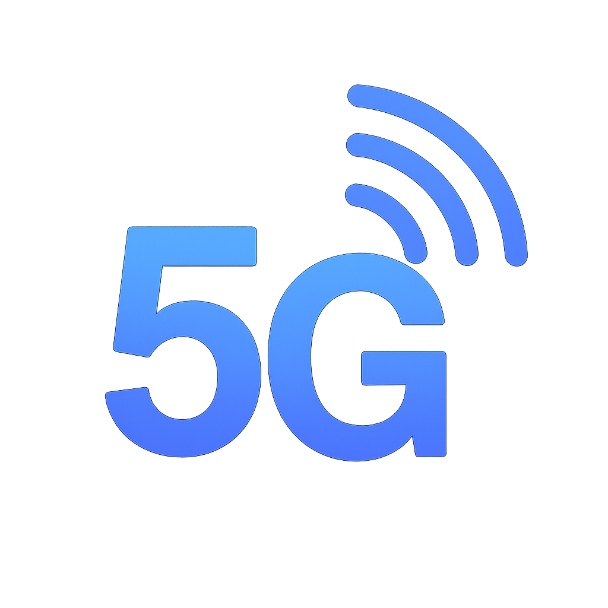

La Red 5G
La tecnología 5G (Quinta Generación) es la sucesora de las redes móviles 4G (LTE). No es simplemente una conexión más rápida para nuestros móviles, sino una plataforma de conectividad completamente nueva diseñada para soportar la digitalización masiva de la industria y la sociedad (el llamado sistema productivo). Sus características clave van mucho más allá de la velocidad. El 5G ofrece una latencia ultra baja (el tiempo de respuesta entre el envío y la recepción de datos), lo que es crucial para el control en tiempo real de vehículos autónomos, maquinaria industrial o cirugía robótica. También permite una densidad de dispositivos muchísimo mayor, lo que significa que miles de sensores, dispositivos IoT (Internet de las Cosas) y wearables podrán estar conectados simultáneamente en un área pequeña, creando el entorno necesario para las "ciudades inteligentes" y las "fábricas inteligentes". En esencia, el 5G es la autopista de datos de alta capacidad que permite que otras tecnologías habilitadoras como la IA, el IoT y el Cloud Computing operen a su máximo potencial.
Puntos Clave
- Mayor Velocidad de Descarga
- Latencia Ultra Baja
- Densidad de Conexión Elevada
- Tecnologia Habilitadora
- Segmentación de Red(Networking Slicing)